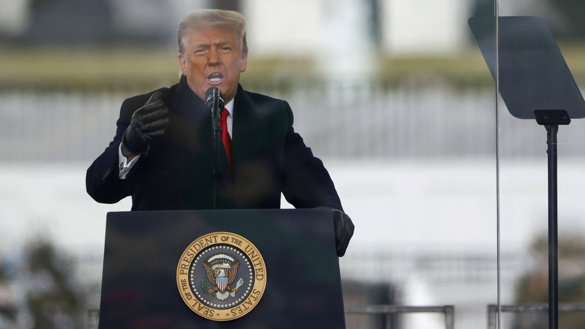
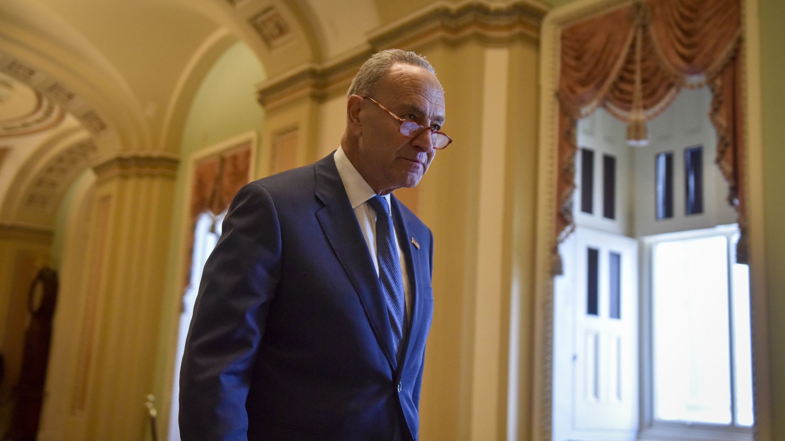

Trump tells mob to “go home now” after it stormed U.S. Capitol

President Trump on Wednesday tweeted a video telling demonstrators from the 'March for Trump' who invaded the U.S. Capitol to 'go home,' and falsely claimed that the election had been stolen from him.
Why it matters: The shocking breach of the Capitol came after Trump encouraged protesters to march on Congress.'I know you're hurt,' Trump said, adding baseless claims that the election 'was stolen from us,' and calling it 'a landslide...'
Trump previously tweeted for demonstrators to '[p]lease support our Capitol Police and Law Enforcement' and 'for everyone at the U.S. Capitol to remain peaceful.'
Posted On: 2021-01-06T00:00:00
Posted By: Ursula Perano

Content Date: 2021-01-06
Download Date: 2021-05-15
Document ID: L0C04CDGI